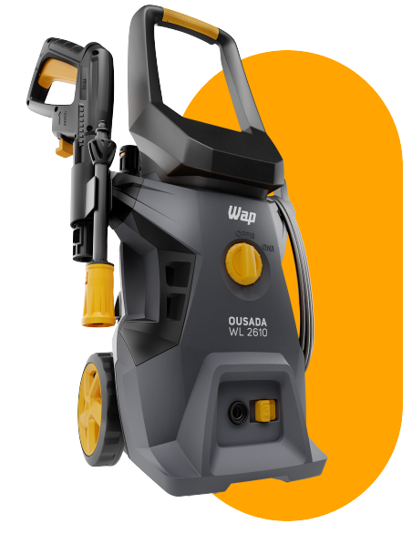
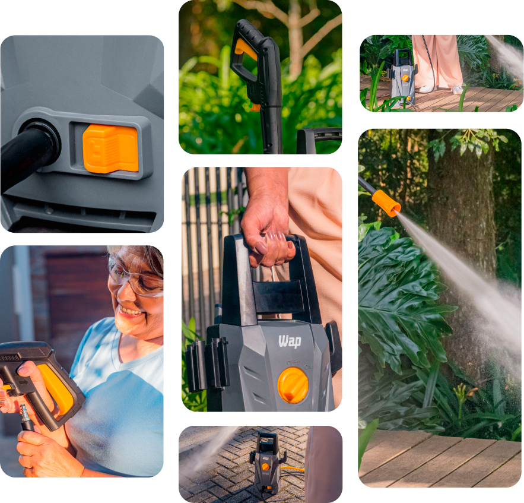
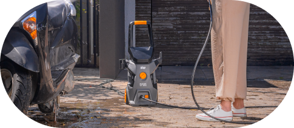
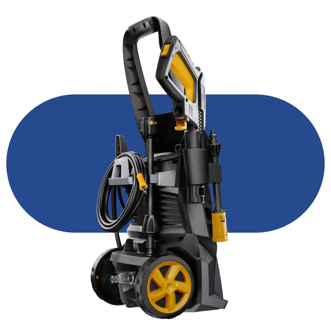

Lavadora de Alta Pressão
Ousada WL 2610
Transforme a maneira como você encara sua rotina de limpeza
A WAP tem um segredo que põe fim ao mistério da limpeza sem complicações. De forma dinâmica e econômica, em um estalar de dedos, a Lavadora de Alta Pressão se torna uma aliada poderosa para sua rotina.

Pressão 1750 PSI
Garante limpeza profunda, sem desperdício de água e com maior economia de energia.
Vazão 342 L/H
Oferece limpeza rápida e eficiente, com consumo de água quase 80% menor em comparação a uma mangueira de jardim comum.

Apenas um clique
Projetada para facilitar a montagem e desmontagem, o sistema de engate rápido torna sua rotina muito mais fácil.
Remove as sugeiras


Combo completo contra a sujeira
Ideal para uma limpeza rápida e completa, em pouco tempo, você pode dar uma cara nova ao jardim, paredes, pisos, automóveis e bicicletas, sem desperdício de água e com maior economia de energia. Com pressão de 1750 PSI, vazão de 342L/H e potência de 1500W, a WAP Ousada WL 2610 não só é precisa, mas também é perfeita para manter sua casa limpa com conforto, pois remove até as sujeiras mais difíceis sem esforço.



Equipada com suportes exclusivos para você acomodar mangueira, pistola, bico regulável e baioneta, facilitando sua movimentação.

Alcança até 5 metros sem trocar de tomada + 3 metros de extensão, a mangueira de alta pressão torna a limpeza muito mais prática e você ganha muito mais autonomia.


A versatilidade necessária para enfrentar desde limpezas delicadas até as mais intensas, tornando-se a aliada perfeita para qualquer desafio de limpeza.

Projetado para proporcionar maior controle e eficiência durante o uso, o sistema eletrônico “Stop Total” corta totalmente a água e desliga o motor quando o gatilho é solto.


Economia de até 80% de água
Mais desempenho com menor consumo, a WL 2610 é a melhor escolha. A lavadora da WAP garante economia de até 80% de água se comparada a uma mangueira convencional. Ao contrário das mangueiras, que utilizam 30 litros de água por minuto, a WL 2610 utiliza cerca de 5L por minuto.
Para enfrentar desde limpezas delicadas até as mais intensas, ela cuida da sua saúde e da sua família. Além de colaborar com o meio ambiente, a lavadora reduz os custos de consumo de água a longo prazo. Experimente e se surpreenda!
-
 O bico regulável permite ajustar o jato conforme sua necessidade. Deixe o jato concentrado para remover sujeiras resistentes ou em leque, para cuidar do jardim.
O bico regulável permite ajustar o jato conforme sua necessidade. Deixe o jato concentrado para remover sujeiras resistentes ou em leque, para cuidar do jardim. -
 O cabo de alimentação alcança até 5 metros sem trocar de tomada, proporcionando mais praticidade e mobilidade.
O cabo de alimentação alcança até 5 metros sem trocar de tomada, proporcionando mais praticidade e mobilidade. -
 O porta acessórios descomplica o ato de guardar e usar a mangueira, pistola, bico regulável e baioneta, deixando tudo organizado para facilitar a mobilidade.
O porta acessórios descomplica o ato de guardar e usar a mangueira, pistola, bico regulável e baioneta, deixando tudo organizado para facilitar a mobilidade. -
 Equipada com a mangueira desobstruidora que remove qualquer obstáculo no caminho.
Equipada com a mangueira desobstruidora que remove qualquer obstáculo no caminho.
IDEAL PARA LIMPEZAS EM


Trabalho conjunto
para uma limpeza completa
O título "Ousada" da lavadora de alta pressão WAP não é à toa. Além do bico leque e concentrado, que promovem versatilidade e conforto, ela ainda oferece diversos tipos de jatos de pressão. Isso proporciona a versatilidade necessária para enfrentar desde limpezas delicadas até as mais intensas.